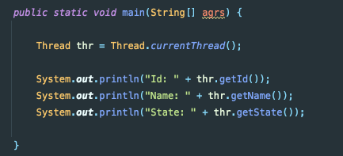
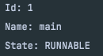
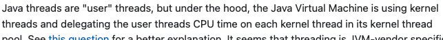
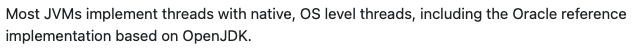
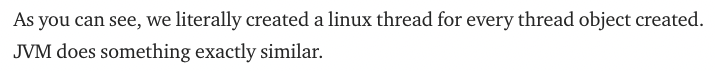

앞선 포스팅에서 유저 레벨 스레드와 커널 레벨 스레드에 대해서 글을 썼다.
글을 쓰다 문득 든 궁금증.
“ 자바의 스레드는 커널 레벨 스레드일까? 유저 레벨 스레드일까? “
오늘은 평소와 다르게 글을 쓰면서 천천히 생각해보려고 한다. 의식의 흐름대로.
우선 다시 한번 상기시킬 겸 자바의 스레드가 어떻게 생성되고 실행되는 지 알아보자.
자바 프로그램의 Main Thread는 JVM에 의해 생성된다.
이 메인 스레드가 자바 프로그램의 main() 메서드의 존재를 확인하고 해당 클래스를 init 하면서 프로그램이 실행된다.
그리고 메인 스레드 뿐만 아니라 Garbage Colllector와 같은 다른 데몬 스레드들도 함께 생성된다.
(이때 생성된 스레드들은 자바 프로그램의 프로세스가 죽을 때까지 함께하는 스레드인 것 같다.)
위와 같이 직접 main 메서드에서 현재 스레드의 정보를 출력해보면 다음과 같은 결과가 나온다.
메인 스레드는 프로그램 내에서 최초 생성되는 스레드이기 때문에 반드시 Id가 1이다.
여기서 잠깐 문제.
이후 new Thread()를 통해 스레드를 생성하면 해당 스레드의 id는 몇일까?
정답은 2가 아니라.. 직접 해봤는데 15가 나온다.
(그 이유는 위에 말했던 것 처럼 메인 스레드 뿐만 아니라 다른 데몬 스레드들도 생성되기 때문이다.)
그리고 한가지 눈에 띄는게 RUNNABLE 이라는 단어.
RUNNABLE이란 스레드가 JVM에서 실행되고 있는 상태, 또는 컨텍스트 스위치되어 OS로부터 CPU 같은 시스템 자원을 할당 받기위해 기다리고 있는 상태일 수도 있는(?) 상태이다.
참고로, 자바의 스레드 상태는 NEW, RUNNABLE, BLOCKED, WAITING, TIMED_WAITING, TERMINATED 총 6가지의 상태로 나뉘고, 운영체제 전공 책에서 봤던 프로세스의 상태 전이도와는 약간 다르다.
그럼, 다시 본론으로 돌아가서
자바 스레드가 커널 레벨 스레드인지 유저 레벨 스레드인지…
결론은 다음과 같다.
https://stackoverflow.com/questions/18278425/are-java-threads-created-in-user-space-or-kernel-space
 https://medium.com/@unmeshvjoshi/how-java-thread-maps-to-os-thread-e280a9fb2e06

자바에서 스레드를 생성할 때 new Thread().start()에서 이 start()메서드는 내부에서 start0()라는 메서드를 호출한다. start0() 메서드는 C++로 구현되어있고, 결국 new Thread().start()를 통해 생성 및 실행되는 스레드는
커널 스레드와 1:1 매핑되는 → 커널 레벨 스레드이다.
역시나 JVM이 유저 레벨 스레드일 수 는 없다. 그럼 너무 비효율 적일 수 밖에 없기 때문이다. (I/O작업 또는 네트워크 작업으로 한개의 스레드가 Block되면 다른 모든 스레드들이 Block되는 참사가 발생한다.)